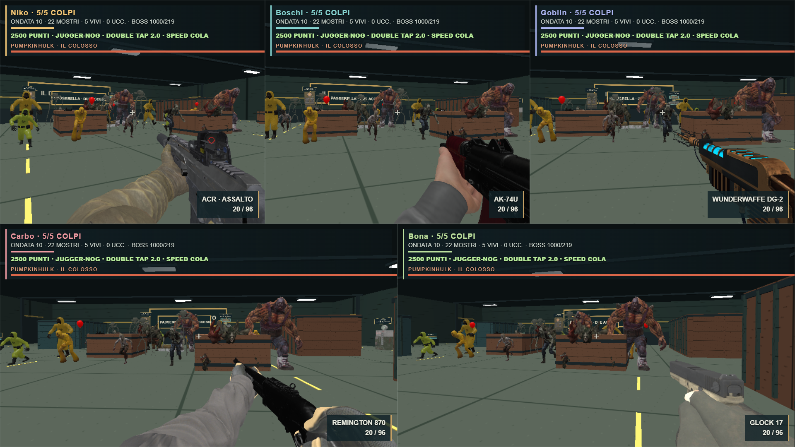
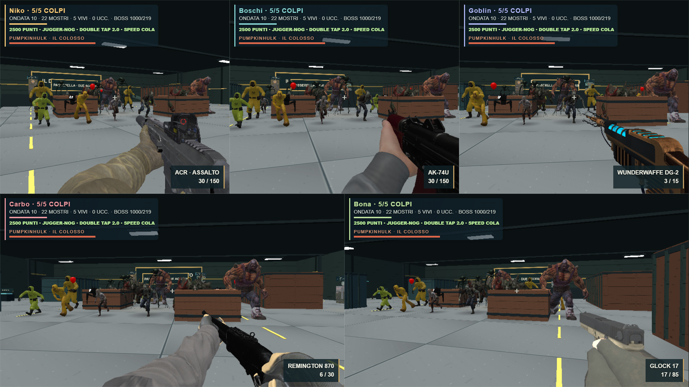
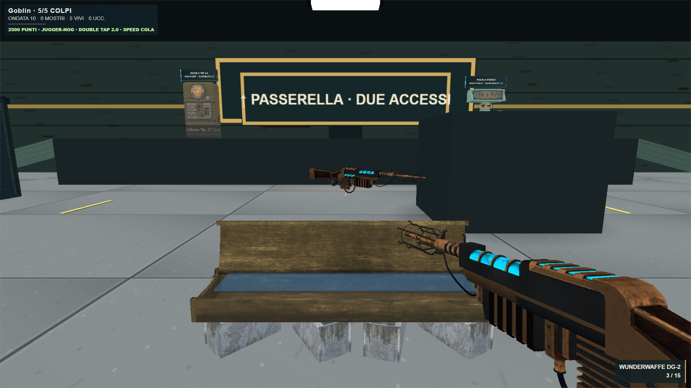

Orda · Più leggibile, più fluido
18.8 → 39.2 FPSConfronto breve del renderer
5 visuali ·22 mostriRisoluzione interna invariata1669×939
952 →652Disegni medi per fotogramma
Pavimento più curato, illuminazione calda/fredda, ombre morbide di contatto, dettagli luminosi e HUD compatto. Il corpo dei Bacteria conserva tutti i vertici e le articolazioni, con molte meno parti da disegnare. Regole, acquisti e danni restano invariati.
RTX3050, finestra1920×1080. Due campioni di6s dopo riscaldamento, stessa fixture del renderer reale. Questa prova misura la presentazione grafica, senza il carico completo di IA, rete e combattimento multiplayer. Condizioni e verifiche · Party Game

Prima · campione con cinque visuali
Dopo · nuove superfici e ombre, stessa risoluzione
Dettaglio · Mystery Box, arma e arenaTypecheck e build superati. Nessun commit, push o deploy.